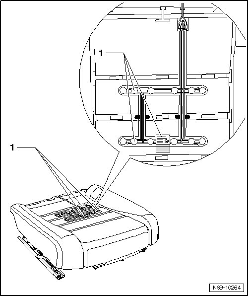
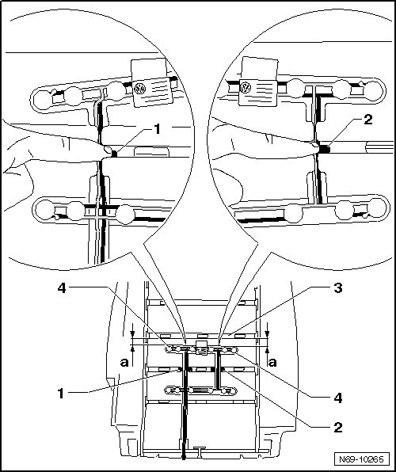
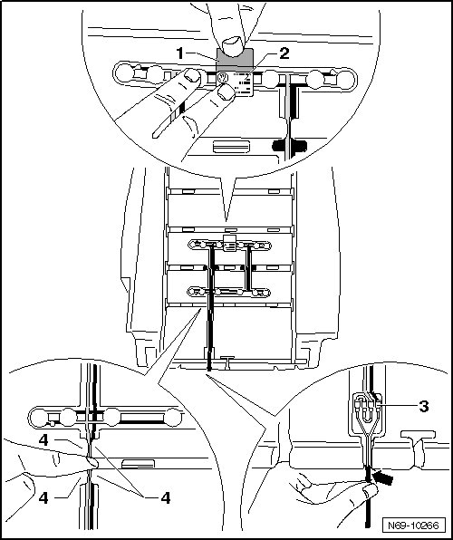

Front Passenger Seat Occupied Sensor
Front Passenger Seat Occupied Sensor
CAUTION!
If Front Passenger's Seat Occupied Sensor (G128) is replaced, also the upholstery, front seat cushion must always be replaced!
Removing
- Remove belt anchor --> [ Belt Anchor ] Belt Anchor
- Mount the fixture for seat repair (VAS 6136) on the engine and transmission holder (VAS 6095).
- Remove 12-way seat --> [ Front Seat ] Front Seats
- Attach the seat to the fixture for seat repair (VAS 6136).
- Remove 12-way seat backrest hinge trim --> [ Front Seat Backrest Hinge trim ] Front Seats
- Remove 12-way seat trim --> [ Front Seat Trim ] Front Seats.
- Remove 12-way seat backrest --> [ Front Seat Backrest ] Front Seats.
- Remove cover and upholstery from front seat cushion (12-way seat) --> [ Seat Cushion and Upholstery ] Front Seat Cushion and Upholstery
CAUTION!
Front Passenger's Seat Occupied Sensor (G128) - 1 - is secured with seat cushion padding. It is not possible to remove and install separately, sensor must be replaced with upholstery.

Installing
- Press wiring harness in area of positioning aids - 1 - and - 2 - into upholstery channel.
- Align front sensors - 4 - parallel to channel - 3 -.
CAUTION!
Ensure distance - a - of front sensors - 4 - to channel - 3 - is constant and wiring harness lies flat on upholstery.

- Secure aligned sensors - 2 -, remove protective foil - 1 - and bond sensors to upholstery.
- Press wiring harness in rear area under retainers - 4 -.
• Spread upholstery out slightly so it is easier to press the wiring harness under the retainers.
• Ensure wiring harness is routed without kinks and lies flat on the upholstery.
- Press wiring harness connecting unit - 3 - into designated depression in upholstery.
CAUTION!
Ensure wiring harness lies flat on upholstery when doing so.
- Press wiring harness in rear area into padding opening - arrow -.
- Connect wiring harness with vehicle electrical system.

Installing of remaining components is reverse of removal.
- After installing, perform a function check with ignition on.